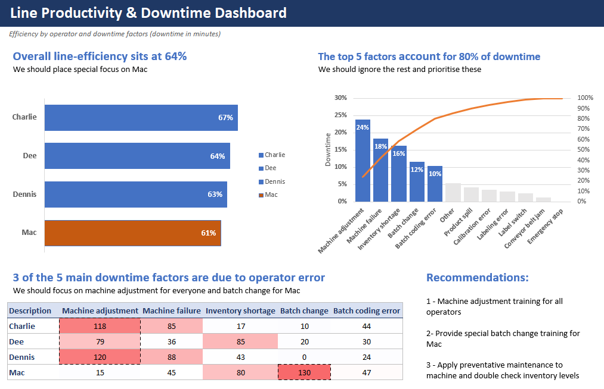

Production line efficiency and downtime
The problem
A production line records the start and end time of every batch, which operator ran it, and any downtime along with its cause. Those logs show what happened, but not where time is being lost, which operators are falling behind, or which causes of downtime are worth fixing first.
What I did
I calculated each batch's run time and compared it with the minimum time for that product, giving an efficiency score for each operator. I then built a one-page report with:
- A bar chart of efficiency by operator, highlighting the lowest performer
- A Pareto chart ranking downtime causes, with a running total showing which few account for most lost time
- A matrix of downtime by operator and cause, with conditional formatting to pick out the problem areas

The result
Overall line efficiency sits at 64%, and five causes account for 80% of downtime, led by machine adjustment. Three of those five come down to operator error, so the report recommends machine adjustment training for the team, batch change training for the lowest-scoring operator, and preventative maintenance with closer checks on inventory.